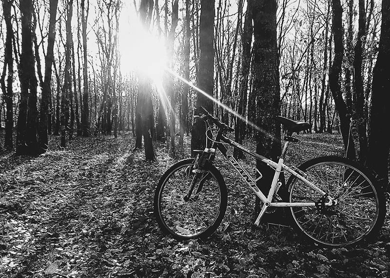

The best news you've heard all day—Cycle the Continental Divide. Register Now! →

Only the best Trails
Here at the Mountain Spoke in Bozeman, Montana, we find only the best trails for you to try out! Our adventure tour page has all the information you need to get you and your friends started as soon as possible. →
At the Mountain Spoke we offer only the best bicycles. You can find them on our shop page! These bicycles are high quality and are made to be ridden around the Big Sky Country. So what are you waiting for? Shop our bikes now. →
Only the Best Bikes
Only
the
best services
Our shop provides only the best bicycle repairs and services. You can check out our repairs link if your bike is having trouble taking you up those awesome trails. Our bike mechanics are versed in any problem that you might have and they will be able to help you. →